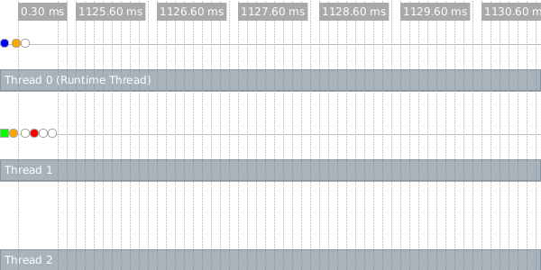
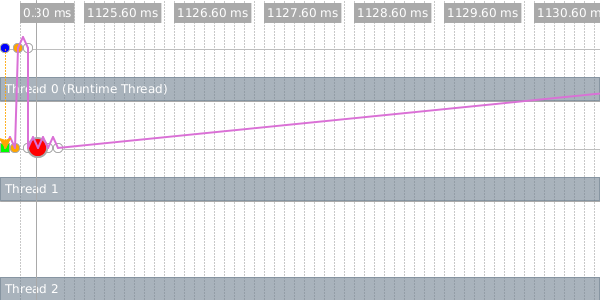
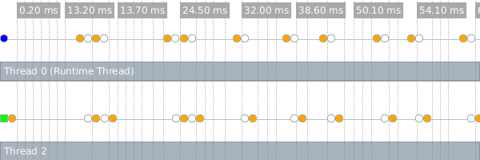
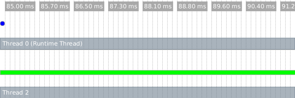

18 Performance
Alan Perlis famously quipped “Lisp programmers know the value of
everything and the cost of nothing.” A Racket programmer knows, for
example, that a lambda anywhere in a program produces a value
that is closed over its lexical environment—
In this chapter, we narrow the gap by explaining details of the Racket compiler and run-time system and how they affect the run-time and memory performance of Racket code.
18.1 Performance in DrRacket
By default, DrRacket instruments programs for debugging, and debugging instrumentation can significantly degrade performance for some programs. Even when debugging is disabled through the Choose Language... dialog’s Show Details panel, the Preserve stacktrace checkbox is clicked by default, which also affects performance. Disabling debugging and stacktrace preservation provides performance results that are more consistent with running in plain racket.
Even so, DrRacket and programs developed within DrRacket use the same Racket virtual machine, so garbage collection times (see Memory Management) may be longer in DrRacket than when a program is run by itself, and DrRacket threads may impede execution of program threads. For the most reliable timing results for a program, run in plain racket instead of in the DrRacket development environment. Non-interactive mode should be used instead of the REPL to benefit from the module system. See Modules and Performance for details.
18.2 The Bytecode and Just-in-Time (JIT) Compilers
Every definition or expression to be evaluated by Racket is compiled to an internal bytecode format. In interactive mode, this compilation occurs automatically and on-the-fly. Tools like raco make and raco setup marshal compiled bytecode to a file, so that you do not have to compile from source every time that you run a program. (Most of the time required to compile a file is actually in macro expansion; generating bytecode from fully expanded code is relatively fast.) See Compilation and Configuration: raco for more information on generating bytecode files.
The bytecode compiler applies all standard optimizations, such as constant propagation, constant folding, inlining, and dead-code elimination. For example, in an environment where + has its usual binding, the expression (let ([x 1] [y (lambda () 4)]) (+ 1 (y))) is compiled the same as the constant 5.
On some platforms, bytecode is further compiled to native code via a just-in-time or JIT compiler. The JIT compiler substantially speeds programs that execute tight loops, arithmetic on small integers, and arithmetic on inexact real numbers. Currently, JIT compilation is supported for x86, x86_64 (a.k.a. AMD64), and 32-bit PowerPC processors. The JIT compiler can be disabled via the eval-jit-enabled parameter or the --no-jit/-j command-line flag for racket.
The JIT compiler works incrementally as functions are applied, but the JIT compiler makes only limited use of run-time information when compiling procedures, since the code for a given module body or lambda abstraction is compiled only once. The JIT’s granularity of compilation is a single procedure body, not counting the bodies of any lexically nested procedures. The overhead for JIT compilation is normally so small that it is difficult to detect.
18.3 Modules and Performance
The module system aids optimization by helping to ensure that identifiers have the usual bindings. That is, the + provided by racket/base can be recognized by the compiler and inlined, which is especially important for JIT-compiled code. In contrast, in a traditional interactive Scheme system, the top-level + binding might be redefined, so the compiler cannot assume a fixed + binding (unless special flags or declarations are used to compensate for the lack of a module system).
Even in the top-level environment, importing with require enables some inlining optimizations. Although a + definition at the top level might shadow an imported +, the shadowing definition applies only to expressions evaluated later.
Within a module, inlining and constant-propagation optimizations take additional advantage of the fact that definitions within a module cannot be mutated when no set! is visible at compile time. Such optimizations are unavailable in the top-level environment. Although this optimization within modules is important for performance, it hinders some forms of interactive development and exploration. The compile-enforce-module-constants parameter disables the JIT compiler’s assumptions about module definitions when interactive exploration is more important. See Assignment and Redefinition for more information.
The compiler may inline functions or propagate constants across module boundaries. To avoid generating too much code in the case of function inlining, the compiler is conservative when choosing candidates for cross-module inlining; see Function-Call Optimizations for information on providing inlining hints to the compiler.
The later section letrec Performance provides some additional caveats concerning inlining of module bindings.
18.4 Function-Call Optimizations
When the compiler detects a function call to an immediately visible function, it generates more efficient code than for a generic call, especially for tail calls. For example, given the program
(letrec ([odd (lambda (x) (if (zero? x) #f (even (sub1 x))))] [even (lambda (x) (if (zero? x) #t (odd (sub1 x))))]) (odd 40000000))
the compiler can detect the odd–even loop and produce code that runs much faster via loop unrolling and related optimizations.
Within a module form, defined variables are lexically scoped like letrec bindings, and definitions within a module therefore permit call optimizations, so
(define (odd x) ....) (define (even x) ....)
within a module would perform the same as the letrec version.
For direct calls to functions with keyword arguments, the compiler can typically check keyword arguments statically and generate a direct call to a non-keyword variant of the function, which reduces the run-time overhead of keyword checking. This optimization applies only for keyword-accepting procedures that are bound with define.
For immediate calls to functions that are small enough, the compiler may inline the function call by replacing the call with the body of the function. In addition to the size of the target function’s body, the compiler’s heuristics take into account the amount of inlining already performed at the call site and whether the called function itself calls functions other than simple primitive operations. When a module is compiled, some functions defined at the module level are determined to be candidates for inlining into other modules; normally, only trivial functions are considered candidates for cross-module inlining, but a programmer can wrap a function definition with begin-encourage-inline to encourage inlining of the function.
Primitive operations like pair?, car, and cdr are inlined at the machine-code level by the JIT compiler. See also the later section Fixnum and Flonum Optimizations for information about inlined arithmetic operations.
18.5 Mutation and Performance
Using set! to mutate a variable can lead to bad performance. For example, the microbenchmark
#lang racket/base (define (subtract-one x) (set! x (sub1 x)) x) (time (let loop ([n 4000000]) (if (zero? n) 'done (loop (subtract-one n)))))
runs much more slowly than the equivalent
#lang racket/base (define (subtract-one x) (sub1 x)) (time (let loop ([n 4000000]) (if (zero? n) 'done (loop (subtract-one n)))))
In the first variant, a new location is allocated for x on every iteration, leading to poor performance. A more clever compiler could unravel the use of set! in the first example, but since mutation is discouraged (see Guidelines for Using Assignment), the compiler’s effort is spent elsewhere.
More significantly, mutation can obscure bindings where inlining and constant-propagation might otherwise apply. For example, in
(let ([minus1 #f]) (set! minus1 sub1) (let loop ([n 4000000]) (if (zero? n) 'done (loop (minus1 n)))))
the set! obscures the fact that minus1 is just another name for the built-in sub1.
18.6 letrec Performance
When letrec is used to bind only procedures and literals, then the compiler can treat the bindings in an optimal manner, compiling uses of the bindings efficiently. When other kinds of bindings are mixed with procedures, the compiler may be less able to determine the control flow.
For example,
(letrec ([loop (lambda (x) (if (zero? x) 'done (loop (next x))))] [junk (display loop)] [next (lambda (x) (sub1 x))]) (loop 40000000))
likely compiles to less efficient code than
(letrec ([loop (lambda (x) (if (zero? x) 'done (loop (next x))))] [next (lambda (x) (sub1 x))]) (loop 40000000))
In the first case, the compiler likely does not know that display does not call loop. If it did, then loop might refer to next before the binding is available.
This caveat about letrec also applies to definitions of functions and constants as internal definitions or in modules. A definition sequence in a module body is analogous to a sequence of letrec bindings, and non-constant expressions in a module body can interfere with the optimization of references to later bindings.
18.7 Fixnum and Flonum Optimizations
A fixnum is a small exact integer. In this case, “small” depends on the platform. For a 32-bit machine, numbers that can be expressed in 30 bits plus a sign bit are represented as fixnums. On a 64-bit machine, 62 bits plus a sign bit are available.
A flonum is used to represent any inexact real number. They correspond to 64-bit IEEE floating-point numbers on all platforms.
Inlined fixnum and flonum arithmetic operations are among the most important advantages of the JIT compiler. For example, when + is applied to two arguments, the generated machine code tests whether the two arguments are fixnums, and if so, it uses the machine’s instruction to add the numbers (and check for overflow). If the two numbers are not fixnums, then it checks whether both are flonums; in that case, the machine’s floating-point operations are used directly. For functions that take any number of arguments, such as +, inlining works for two or more arguments (except for -, whose one-argument case is also inlined) when the arguments are either all fixnums or all flonums.
Flonums are typically boxed, which means that memory is allocated to hold every result of a flonum computation. Fortunately, the generational garbage collector (described later in Memory Management) makes allocation for short-lived results reasonably cheap. Fixnums, in contrast are never boxed, so they are typically cheap to use.
See Parallelism with Futures for an example use of flonum-specific operations.
The racket/flonum library provides flonum-specific operations, and combinations of flonum operations allow the JIT compiler to generate code that avoids boxing and unboxing intermediate results. Besides results within immediate combinations, flonum-specific results that are bound with let and consumed by a later flonum-specific operation are unboxed within temporary storage. Finally, the compiler can detect some flonum-valued loop accumulators and avoid boxing of the accumulator. The bytecode decompiler (see raco decompile: Decompiling Bytecode) annotates combinations where the JIT can avoid boxes with #%flonum, #%as-flonum, and #%from-flonum.
Unboxing of local bindings and accumualtors is not supported by the JIT for PowerPC.
The racket/unsafe/ops library provides unchecked fixnum- and flonum-specific operations. Unchecked flonum-specific operations allow unboxing, and sometimes they allow the compiler to reorder expressions to improve performance. See also Unchecked, Unsafe Operations, especially the warnings about unsafety.
18.8 Unchecked, Unsafe Operations
The racket/unsafe/ops library provides functions that are like other functions in racket/base, but they assume (instead of checking) that provided arguments are of the right type. For example, unsafe-vector-ref accesses an element from a vector without checking that its first argument is actually a vector and without checking that the given index is in bounds. For tight loops that use these functions, avoiding checks can sometimes speed the computation, though the benefits vary for different unchecked functions and different contexts.
Beware that, as “unsafe” in the library and function names suggest, misusing the exports of racket/unsafe/ops can lead to crashes or memory corruption.
18.9 Memory Management
The Racket implementation is available in two variants: 3m and CGC. The 3m variant uses a modern, generational garbage collector that makes allocation relatively cheap for short-lived objects. The CGC variant uses a conservative garbage collector which facilitates interaction with C code at the expense of both precision and speed for Racket memory management. The 3m variant is the standard one.
Although memory allocation is reasonably cheap, avoiding allocation altogether is normally faster. One particular place where allocation can be avoided sometimes is in closures, which are the run-time representation of functions that contain free variables. For example,
(let loop ([n 40000000] [prev-thunk (lambda () #f)]) (if (zero? n) (prev-thunk) (loop (sub1 n) (lambda () n))))
allocates a closure on every iteration, since (lambda () n) effectively saves n.
The compiler can eliminate many closures automatically. For example, in
(let loop ([n 40000000] [prev-val #f]) (let ([prev-thunk (lambda () n)]) (if (zero? n) prev-val (loop (sub1 n) (prev-thunk)))))
no closure is ever allocated for prev-thunk, because its only application is visible, and so it is inlined. Similarly, in
(let n-loop ([n 400000]) (if (zero? n) 'done (let m-loop ([m 100]) (if (zero? m) (n-loop (sub1 n)) (m-loop (sub1 m))))))
then the expansion of the let form to implement m-loop involves a closure over n, but the compiler automatically converts the closure to pass itself n as an argument instead.
18.10 Parallelism with Futures
The racket/future library provides support for performance improvement through parallelism with the future and touch functions. The level of parallelism available from those constructs, however, is limited by several factors, and the current implementation is best suited to numerical tasks.
Other functions, such as thread, support the creation of reliably concurrent tasks. However, threads never run truly in parallel, even if the hardware and operating system support parallelism.
As a starting example, the any-double? function below takes a list of numbers and determines whether any number in the list has a double that is also in the list:
(define (any-double? l) (for/or ([i (in-list l)]) (for/or ([i2 (in-list l)]) (= i2 (* 2 i)))))
This function runs in quadratic time, so it can take a long time (on the order of a second) on large lists like l1 and l2:
(define l1 (for/list ([i (in-range 5000)]) (+ (* 2 i) 1))) (define l2 (for/list ([i (in-range 5000)]) (- (* 2 i) 1))) (or (any-double? l1) (any-double? l2))
The best way to speed up any-double? is to use a different algorithm. However, on a machine that offers at least two processing units, the example above can run in about half the time using future and touch:
(let ([f (future (lambda () (any-double? l2)))]) (or (any-double? l1) (touch f)))
The future f runs (any-double? l2) in parallel to (any-double? l1), and the result for (any-double? l2) becomes available about the same time that it is demanded by (touch f).
Futures run in parallel as long as they can do so safely, but the notion of “future safe” is inherently tied to the implementation. The distinction between “future safe” and “future unsafe” operations may be far from apparent at the level of a Racket program. The remainder of this section works through an example to illustrate this distinction and to show how to use the future visualizer can help shed light on it.
Consider the following core of a Mandelbrot-set computation:
(define (mandelbrot iterations x y n) (let ([ci (- (/ (* 2.0 y) n) 1.0)] [cr (- (/ (* 2.0 x) n) 1.5)]) (let loop ([i 0] [zr 0.0] [zi 0.0]) (if (> i iterations) i (let ([zrq (* zr zr)] [ziq (* zi zi)]) (cond [(> (+ zrq ziq) 4) i] [else (loop (add1 i) (+ (- zrq ziq) cr) (+ (* 2 zr zi) ci))]))))))
The expressions (mandelbrot 10000000 62 500 1000) and (mandelbrot 10000000 62 501 1000) each take a while to produce an answer. Computing them both, of course, takes twice as long:
(list (mandelbrot 10000000 62 500 1000) (mandelbrot 10000000 62 501 1000))
Unfortunately, attempting to run the two computations in parallel with future does not improve performance:
(let ([f (future (lambda () (mandelbrot 10000000 62 501 1000)))]) (list (mandelbrot 10000000 62 500 1000) (touch f)))
To see why, use the future-visualizer, like this:
(require future-visualizer) (visualize-futures (let ([f (future (lambda () (mandelbrot 10000000 62 501 1000)))]) (list (mandelbrot 10000000 62 500 1000) (touch f))))
This opens a window showing a graphical view of a trace of the computation. The upper-left portion of the window contains an execution timeline:

Each horizontal row represents an OS-level thread, and the colored dots represent important events in the execution of the program (they are color-coded to distinguish one event type from another). The upper-left blue dot in the timeline represents the future’s creation. The future executes for a brief period (represented by a green bar in the second line) on thread 1, and then pauses to allow the runtime thread to perform a future-unsafe operation.
In the Racket implementation, future-unsafe operations fall into one of two categories. A blocking operation halts the evaluation of the future, and will not allow it to continue until it is touched. After the operation completes within touch, the remainder of the future’s work will be evaluated sequentially by the runtime thread. A synchronized operation also halts the future, but the runtime thread may perform the operation at any time and, once completed, the future may continue running in parallel. Memory allocation and JIT compilation are two common examples of synchronized operations.
In the timeline, we see an orange dot just to the right of the green bar on thread 1 – this dot represents a synchronized operation (memory allocation). The first orange dot on thread 0 shows that the runtime thread performed the allocation shortly after the future paused. A short time later, the future halts on a blocking operation (the first red dot) and must wait until the touch for it to be evaluated (slightly after the 1049ms mark).
When you move your mouse over an event, the visualizer shows you detailed information about the event and draws arrows connecting all of the events in the corresponding future. This image shows those connections for our future.

The dotted orange line connects the first event in the future to the future that created it, and the purple lines connect adjacent events within the future.
The reason that we see no parallelism is that the < and * operations in the lower portion of the loop in mandelbrot involve a mixture of floating-point and fixed (integer) values. Such mixtures typically trigger a slow path in execution, and the general slow path will usually be blocking.
Changing constants to be floating-points numbers in mandelbrot addresses that first problem:
(define (mandelbrot iterations x y n) (let ([ci (- (/ (* 2.0 y) n) 1.0)] [cr (- (/ (* 2.0 x) n) 1.5)]) (let loop ([i 0] [zr 0.0] [zi 0.0]) (if (> i iterations) i (let ([zrq (* zr zr)] [ziq (* zi zi)]) (cond [(> (+ zrq ziq) 4.0) i] [else (loop (add1 i) (+ (- zrq ziq) cr) (+ (* 2.0 zr zi) ci))]))))))
With that change, mandelbrot computations can run in parallel. Nevertheless, we still see a special type of slow-path operation limiting our parallelism (orange dots):

The problem is that most every arithmetic operation in this example produces an inexact number whose storage must be allocated. While some allocation can safely be performed exclusively without the aid of the runtime thread, especially frequent allocation requires synchronized operations which defeat any performance improvement.
By using flonum-specific operations (see Fixnum and Flonum Optimizations), we can re-write mandelbrot to use much less allocation:
(define (mandelbrot iterations x y n) (let ([ci (fl- (fl/ (* 2.0 (->fl y)) (->fl n)) 1.0)] [cr (fl- (fl/ (* 2.0 (->fl x)) (->fl n)) 1.5)]) (let loop ([i 0] [zr 0.0] [zi 0.0]) (if (> i iterations) i (let ([zrq (fl* zr zr)] [ziq (fl* zi zi)]) (cond [(fl> (fl+ zrq ziq) 4.0) i] [else (loop (add1 i) (fl+ (fl- zrq ziq) cr) (fl+ (fl* 2.0 (fl* zr zi)) ci))]))))))
This conversion can speed mandelbrot by a factor of 8, even in sequential mode, but avoiding allocation also allows mandelbrot to run usefully faster in parallel. Executing this program yields the following in the visualizer:

Notice that only one green bar is shown here because one of the mandelbrot computations is not being evaluated by a future (on the runtime thread).
As a general guideline, any operation that is inlined by the JIT compiler runs safely in parallel, while other operations that are not inlined (including all operations if the JIT compiler is disabled) are considered unsafe. The raco decompile tool annotates operations that can be inlined by the compiler (see raco decompile: Decompiling Bytecode), so the decompiler can be used to help predict parallel performance.
18.11 Parallelism with Places
The racket/place library provides support for
performance improvement through parallelism with the place
form. The place form creates a place, which is
effectively a new Racket instance that can run in parallel to other
places, including the initial place. The full power of the Racket
language is available at each place, but places can communicate only
through message passing—
As a starting example, the racket program below uses a place to determine whether any number in the list has a double that is also in the list:
#lang racket (provide main) (define (any-double? l) (for/or ([i (in-list l)]) (for/or ([i2 (in-list l)]) (= i2 (* 2 i))))) (define (main) (define p (place ch (define l (place-channel-get ch)) (define l-double? (any-double? l)) (place-channel-put ch l-double?))) (place-channel-put p (list 1 2 4 8)) (place-channel-get p))
The identifier ch after place is bound to a place channel. The remaining body expressions within the place form are evaluated in a new place, and the body expressions use ch to communicate with the place that spawned the new place.
In the body of the place form above, the new place receives a list of numbers over ch and binds the list to l. It then calls any-double? on the list and binds the result to l-double?. The final body expression sends the l-double? result back to the original place over ch.
In DrRacket, after saving and running the above program, evaluate (main) in the interactions window to create the new place. When using places inside DrRacket, the module containg place code must be saved to a file before it will execute. Alternatively, save the program as "double.rkt" and run from a command line with
racket -tm double.rkt
where the -t flag tells racket to load the double.rkt module, the -m flag calls the exported main function, and -tm combines the two flags.
The place form has two subtle features. First, it lifts the place body to an anonymous, module-level function. This lifting means that any binding referenced by the place body must be available in the module’s top level. Second, the place form dynamic-requires the enclosing module in a newly created place. As part of the dynamic-require, the current module body is evaluated in the new place. The consequence of this second feature is that place should not appear immediately in a module or in a function that is called in a module’s top level; otherwise, invoking the module will invoke the same module in a new place, and so on, triggering a cascade of place creations that will soon exhaust memory.
#lang racket (provide main) ; Don't do this! (define p (place ch (place-channel-get ch))) (define (indirect-place-invocation) (define p2 (place ch (place-channel-get ch)))) ; Don't do this, either! (indirect-place-invocation)
18.12 Distributed Places
The racket/place/distributed library provides support for distributed programming.
The example bellow demonstrates how to launch a remote racket node instance, launch remote places on the new remote node instance, and start an event loop that monitors the remote node instance.
The example code can also be found in "racket/distributed/examples/named/master.rkt".
#lang racket/base (require racket/place/distributed racket/class racket/place racket/runtime-path "bank.rkt" "tuple.rkt") (define-runtime-path bank-path "bank.rkt") (define-runtime-path tuple-path "tuple.rkt") (provide main) (define (main) (define remote-node (spawn-remote-racket-node "localhost" #:listen-port 6344)) (define tuple-place (supervise-named-dynamic-place-at remote-node 'tuple-server tuple-path 'make-tuple-server)) (define bank-place (supervise-dynamic-place-at remote-node bank-path 'make-bank)) (message-router remote-node (after-seconds 4 (displayln (bank-new-account bank-place 'user0)) (displayln (bank-add bank-place 'user0 10)) (displayln (bank-removeM bank-place 'user0 5))) (after-seconds 2 (define c (connect-to-named-place remote-node 'tuple-server)) (define d (connect-to-named-place remote-node 'tuple-server)) (tuple-server-hello c) (tuple-server-hello d) (displayln (tuple-server-set c "user0" 100)) (displayln (tuple-server-set d "user2" 200)) (displayln (tuple-server-get c "user0")) (displayln (tuple-server-get d "user2")) (displayln (tuple-server-get d "user0")) (displayln (tuple-server-get c "user2")) ) (after-seconds 8 (node-send-exit remote-node)) (after-seconds 10 (exit 0))))
The spawn-remote-racket-node primitive connects to "localhost" and starts a racloud node there that listens on port 6344 for further instructions. The handle to the new racloud node is assigned to the remote-node variable. Localhost is used so that the example can be run using only a single machine. However localhost can be replaced by any host with ssh publickey access and racket. The supervise-named-dynamic-place-at creates a new place on the remote-node. The new place will be identified in the future by its name symbol 'tuple-server. A place descriptor is expected to be returned by invoking dynamic-place with the tuple-path module path and the 'make-tuple-server symbol.
The code for the tuple-server place exists in the file "tuple.rkt". The "tuple.rkt" file contains the use of define-named-remote-server form, which defines a RPC server suitiable for invocation by supervise-named-dynamic-place-at.
#lang racket/base (require racket/match racket/place/define-remote-server) (define-named-remote-server tuple-server (define-state h (make-hash)) (define-rpc (set k v) (hash-set! h k v) v) (define-rpc (get k) (hash-ref h k #f)) (define-cast (hello) (printf "Hello from define-cast\n") (flush-output)))
The define-named-remote-server form takes an identifier and a list of custom expressions as its arguments. From the identifier a place-thunk function is created by prepending the make- prefix. In this case make-tuple-server. The make-tuple-server identifier is the place-function-name given to the supervise-named-dynamic-place-at form above. The define-state custom form translates into a simple define form, which is closed over by the define-rpc form.
The define-rpc form is expanded into two parts. The first part is the client stubs that call the rpc functions. The client function name is formed by concatenating the define-named-remote-server identifier, tuple-server, with the RPC function name set to form tuple-server-set. The RPC client functions take a destination argument which is a remote-connection% descriptor and then the RPC function arguments. The RPC client function sends the RPC function name, set, and the RPC arguments to the destination by calling an internal function named-place-channel-put. The RPC client then calls named-place-channel-get to wait for the RPC response.
The second expansion part of define-rpc is the server implementation of the RPC call. The server is implemented by a match expression inside the make-tuple-server function. The match clause for tuple-server-set matches on messages beginning with the 'set symbol. The server executes the RPC call with the communicated arguments and sends the result back to the RPC client.
The define-cast form is similar to the define-rpc form except there is no reply message from the server to client
(module tuple racket/base (require racket/place racket/match) (define/provide (tuple-server-set dest k v) (named-place-channel-put dest (list 'set k v)) (named-place-channel-get dest)) (define/provide (tuple-server-get dest k) (named-place-channel-put dest (list 'get k)) (named-place-channel-get dest)) (define/provide (tuple-server-hello dest) (named-place-channel-put dest (list 'hello))) (define/provide (make-tuple-server ch) (let () (define h (make-hash)) (let loop () (define msg (place-channel-get ch)) (define (log-to-parent-real msg #:severity (severity 'info)) (place-channel-put ch (log-message severity msg))) (syntax-parameterize ((log-to-parent (make-rename-transformer #'log-to-parent-real))) (match msg ((list (list 'set k v) src) (define result (let () (hash-set! h k v) v)) (place-channel-put src result) (loop)) ((list (list 'get k) src) (define result (let () (hash-ref h k #f))) (place-channel-put src result) (loop)) ((list (list 'hello) src) (define result (let () (printf "Hello from define-cast\n") (flush-output))) (loop)))) loop))))